AX 실무 교육 시리즈
ChatGPT · Work · Codex
핵심 기능부터 업무 자동화까지 초보자 실습 교육
핵심 기능
업무 준비
화면 구성
사용법
비개발자용 · 세션별 구성
핵심 기능부터 업무 자동화까지 초보자 실습 교육
하나의 계정, 하나의 앱 안에서 Chat · Work · Codex 세 화면이 어떻게 이어지는지 순서대로 익힙니다.
핵심 기능 7가지:
Library · Projects · Scheduled · Plugins · Images · Sites · GPTs
업무 준비 7단계:
설치 · 첫 세션 · 환경 · 신뢰 폴더까지
화면 · 실행 · 확장 22단계:
패널 구성부터 CLI · 보안 · 로드맵까지
OpenAI가 2026년 7월 9일 한 번에 발표한 세 가지 변화입니다. 오늘 배우는 내용은 이 기준으로 최신화했습니다.
연구 · 파일 · 앱 연동 · 문서/시트/슬라이드 · Sites 제작까지 지원하는 장시간 에이전트
(베타, Free/Go 제외)
대화에서 바로 웹사이트 · 대시보드를 만들고
호스팅. Canvas의 웹 제작 기능을 대체
기존 App Directory가 Plugin Directory로 이동
플러그인이 앱 · 스킬 · 템플릿을
함께 묶는 발견 창구가 됨
개발 경험이 없어도 괜찮습니다. Work · Codex 세션에서 나올 용어를 쉬운 말로 먼저 정리합니다.
파일이 바뀐 기록을 저장해두는 서랍. 되돌리기가 쉬워집니다.
바뀌기 전과 후를 나란히 보여주는 비교 화면입니다.
“이렇게 바꿔도 될까요?”라고 정리해서 올리는 변경 제안서입니다.
마우스 클릭 대신 글자로 명령을 입력하는 화면입니다.
CLI 명령을 입력하고 실행 결과를 보는 창입니다.
실제 자료에 영향 없이 안전하게 연습할 수 있는 격리 공간입니다.
ChatGPT가 만든 문서 · PPT · 표 · 이미지와 업로드 파일을 보관하고, 검색해 다음 작업의 자료로 다시 사용하는 공간입니다.
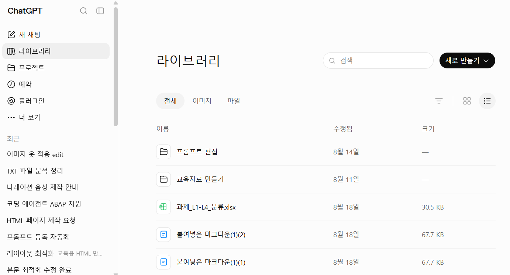
오래 이어지는 업무를 주제별로 정리하고, 관련 채팅 · 업로드 파일 · 연결 소스 · 프로젝트 지침을 여러 대화에서 공유합니다.
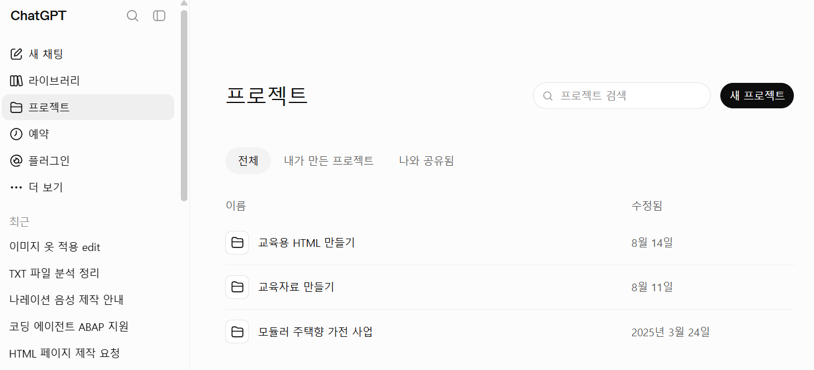
보고서 갱신 · 모니터링 · 리마인더처럼 같은 작업을 한 번, 주기적으로, 또는 조건이 충족될 때 백그라운드에서 실행합니다.
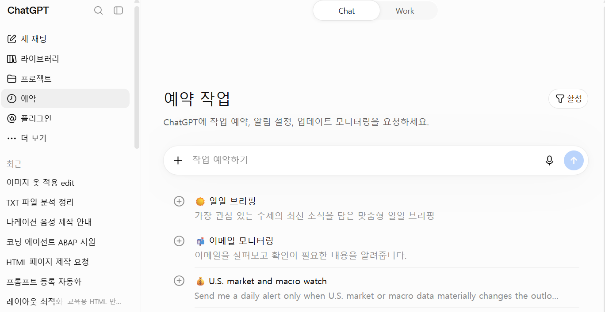
플러그인은 스킬 · 커넥터 · MCP 도구 등을 묶어 Google Drive, Slack, GitHub 같은 서비스의 정보를 읽거나 지원되는 작업을 수행하게 합니다.
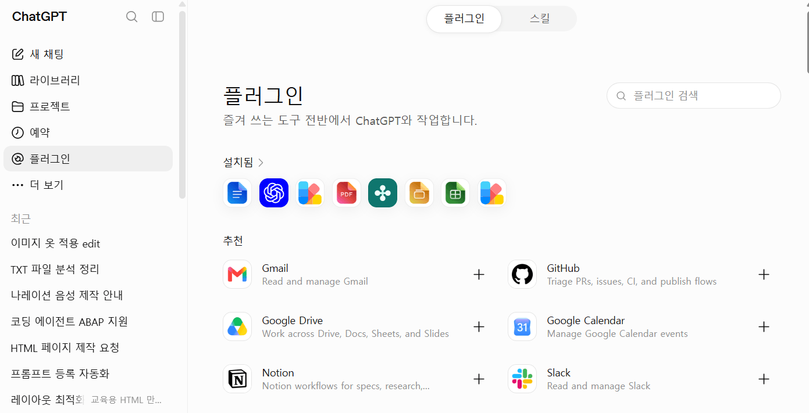
ChatGPT에서 배너 · 일러스트 · UI 자산 등을 생성하거나 기존 이미지를 참조해 추가 · 삭제 · 스타일 변경을 자연어로 요청할 수 있습니다.
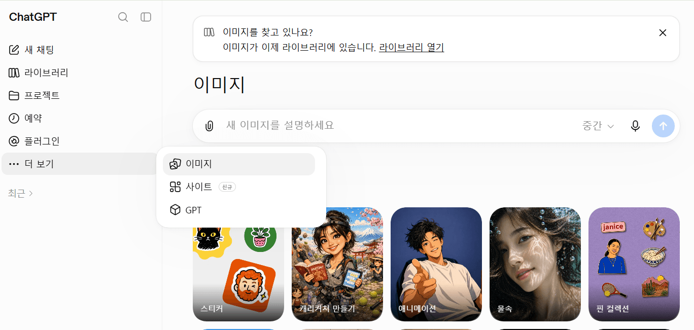
프롬프트나 호환되는 기존 프로젝트에서 웹사이트 · 대시보드 · 내부 도구 · 게임을 만들고, OpenAI 호스팅으로 저장 · 수정 · 공유합니다.
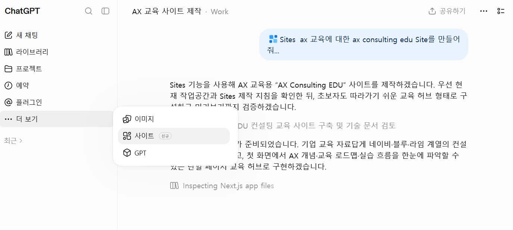
반복되는 역할과 답변 규칙, 참고 문서, 사용할 기능을 미리 구성해 특정 업무에 일관되게 답하는 맞춤형 ChatGPT를 만듭니다.
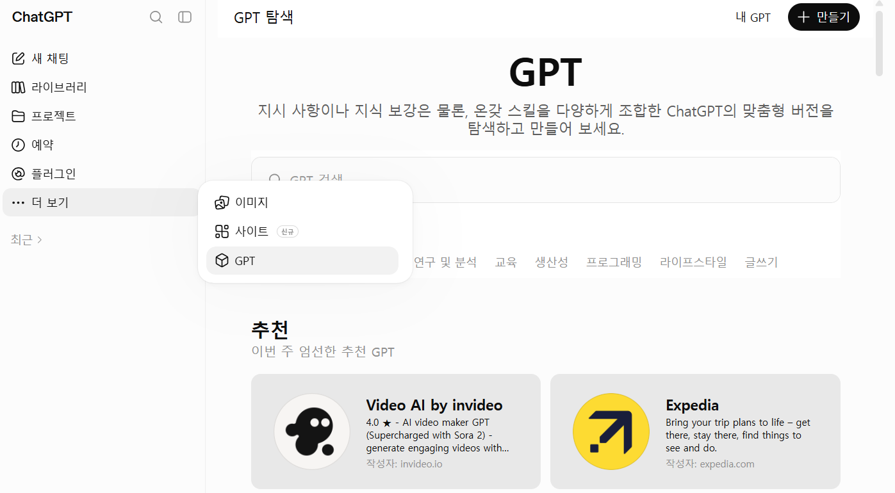
• 질문 · 글쓰기 · 분석
• 일반 대화 중심
• 로컬 프로젝트 직접 수정 아님
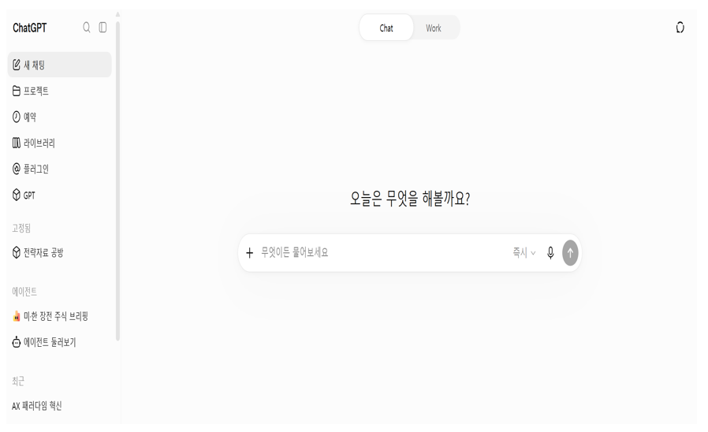
• 장시간 · 다단계 업무
• 샌드박스/클라우드 작업
• 비개발 업무 자동화
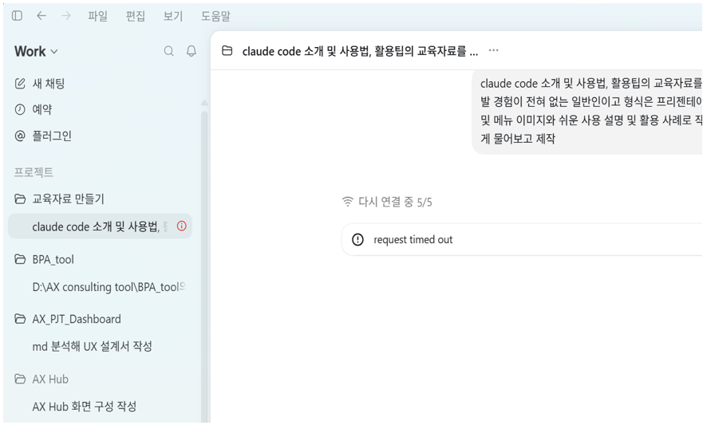
• 파일 · 프로젝트 실행
• 로컬 파일 직접 접근
• 변경을 실시간 검토
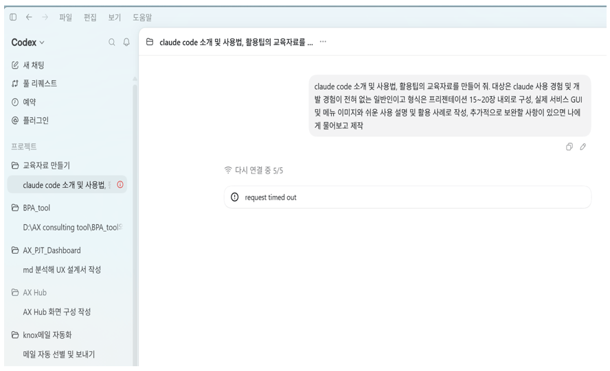
ChatGPT 계정과 데스크톱 앱 최신 버전
macOS · Windows용 최신 ChatGPT 데스크톱 앱
연습용 폴더 또는 Git 저장소 준비
초보자 교육은 데스크톱 앱에서 시작하고 CLI는 Codex 세션 마지막에 소개합니다.
chatgpt.com/download에서 운영체제 선택
다운로드 파일 실행 후 앱 열기
OpenAI 계정으로 로그인
사이드바에서 Work 또는 Codex 화면 선택
목표: 내 컴퓨터에 앱을 설치하고 Work 화면을 직접 열어봅니다.
내 컴퓨터의 파일과 도구 사용. 초보자 실습 추천
앱을 닫아도 클라우드에서 계속 실행
원격 서버 · 개발 머신에 연결
Windows에서 Linux 환경과 경로 사용
질문에 답하고 문장을 만듭니다. 로컬 프로젝트 파일을 직접 바꾸는 작업은 기본 목적이 아닙니다.
선택한 폴더를 읽고 → 계획하고 → 파일을 수정하고 → 명령과 테스트로 검증합니다.
메뉴(새 채팅·풀 리퀘스트·예약·플러그인) · 프로젝트 목록 · 최근 대화
시작 화면 추천 카드 · 사용 한도 알림 · 프로젝트 선택
프롬프트 입력, 환경 · 모델 · 권한 · 사용량 확인
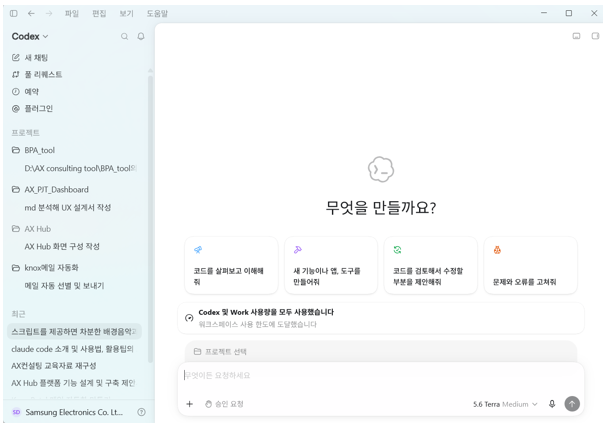
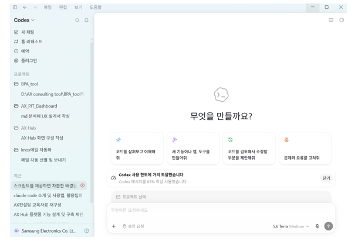
왼쪽 메뉴 중 세 기능의 역할과 사용 예시를 자세히 살펴봅니다.
Codex가 생성했거나 연결된 코드 저장소의 Pull Request 목록을 한 곳에서 확인하는 기능. 리뷰 상태와 병합 여부를 추적합니다.
특정 시간 또는 주기로 반복 실행할 작업을 등록해두는 기능. 원하는 주기로 Codex가 자동으로 작업을 수행하도록 예약합니다.
외부 서비스·도구와 Codex를 연동하기 위한 확장 기능. 필요한 플러그인을 추가·제거해 작업 범위를 넓힐 수 있습니다.
새 작업을 시작할 때 “무엇을 만들까요?” 문구와 함께 자주 쓰는 요청 4가지를 빠르게 선택할 수 있습니다.
기존 코드베이스의 구조와 동작 방식을 분석하고 설명합니다.
신규 기능을 구현하거나 새로운 앱과 도구를 개발합니다.
코드를 리뷰하고 개선할 지점을 제안합니다.
버그와 오류의 원인을 진단하고 수정합니다.
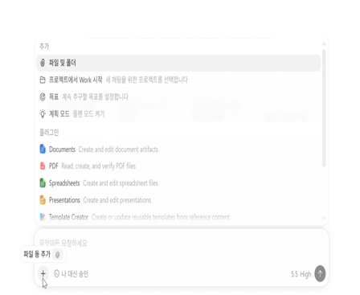
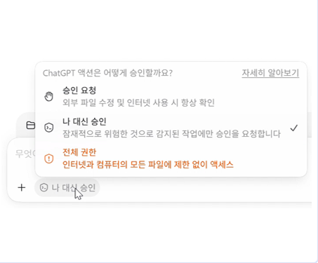
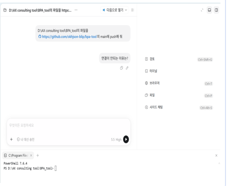
무엇을 만들거나 고칠까요?
어떤 폴더 · 파일인가요?
형식 · 도구 · 보안 조건은?
어떻게 확인하면 끝인가요?
파일 구조 파악
변경 범위 합의
편집 및 명령
Diff 및 댓글
테스트/미리보기
목표: 실제 업무 폴더가 아닌 연습용 복사본 폴더로 첫 요청을 실행해봅니다.
목표: Codex가 만든 변경을 Diff 패널에서 확인하고, 이해한 뒤에만 승인합니다.
회의록을 열어 하나씩 읽고,
담당자 · 기한을 직접 표로 옮겨 적습니다.
파일이 많아질수록 시간이 늘어납니다.
요청 한 번으로 초안이 만들어지고,
사람은 Diff에서 결과만 검토 · 승인합니다.
승인한 내용만 실제 파일에 반영됩니다.
변경 파일 확인,
커밋 전 Diff 검토
세션마다 격리된 작업 공간,
같은 저장소의 충돌 감소
서로 독립적인 작업만 동시에,
각 결과를 별도 검토
변경 요약과 테스트 결과를 확인한 뒤
Pull Request를 생성합니다.
CI 실패 출력을 읽고
Codex가 수정 작업을 시도합니다.
모든 검사가 통과하면 squash merge로
저장소 변경 사항을 반영합니다.
프로젝트 규칙과 반복 지시를 저장하고,
Desktop과 CLI가 함께 읽습니다.
GitHub · Slack · Linear 등
외부 도구와 연결합니다.
Local 예약 작업을 생성하고,
정해진 시간에 실행합니다.
AI 도구도 회사의 보안 · 개인정보 정책을 그대로 따릅니다.
1. Connector
2. Bash 명령
3. Browser / Chrome
4. 전용 시뮬레이터
• 마지막 수단으로 화면 클릭 · 입력
• 기본 비활성화
• 실제 데스크톱 권한에 주의
Settings → General → Computer use에서 활성화합니다.
프로젝트 폴더에서 codex 실행
→ 대화형 세션 실행
codex resume
→ 이전 세션 재개
/new
→ CLI 세션을 앱에서 열기
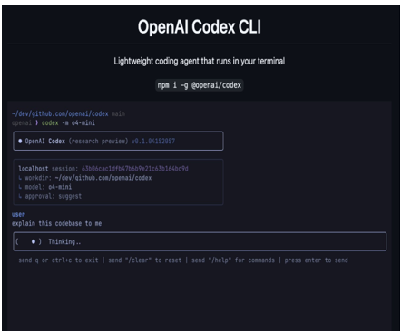
복사본 폴더에서 반복 문서 작업 1가지를 골라 Manual 권한으로 연습
검증된 요청을 팀 내 2~3명과 함께 시도하고 결과 비교
허용 폴더, 권한 모드, 승인 절차를 팀 규칙으로 공유
각 단계로 넘어가기 전, 이전 단계에서 문제가 없었는지 먼저 확인하세요.
짧은 대화 · 결과물 제작
• Library/Projects로 결과물 재사용
• Images · Sites로 콘텐츠 제작
• GPTs로 반복 업무 재활용
장시간 에이전트 · 업무 자동화
• 연구 · 파일 · 앱 연동 작업 수행
• Scheduled로 반복 작업 예약
• Store에서 목적에 맞는 앱 선택
로컬 파일 직접 편집
• 선택한 폴더를 직접 읽고 수정
• Diff와 PR로 변경 검토
• CLI 스크립트와 자동화 확장
결과물만 필요하면 ChatGPT, 여러 단계의 조사·자동화가 필요하면 Work, 실제 코드·파일을 직접 바꿔야 하면 Codex를 선택하세요.
ChatGPT · Work · Codex 모두 복사본 폴더에서 시작하고, 승인 전에 항상 확인하세요.